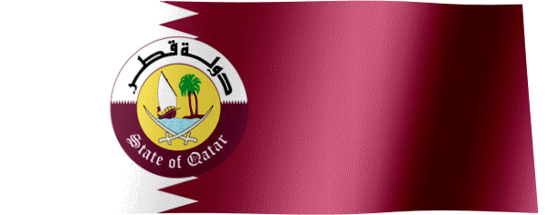

Qatar, officially the State of Qatar, is a country in Western Asia. It occupies the small Qatar Peninsula on the northeastern coast of the Arabian Peninsula. Qatar is a very small country with a geographical area of 11,581 km² (4,471 sq mi). The capital of Qatar is Doha, which is home to over 80% of the nation's population. Qatar's total population is 2,989,748.
To read more, visit Wikipedia